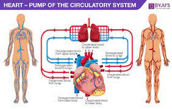

The cardiovascular system, also known as the circulatory system, is a vital organ system responsible for the transportation of blood, oxygen, nutrients, hormones, and waste products throughout the body. It consists of the heart, blood vessels, and blood.

-
Heart: The heart is a muscular organ located in the chest, slightly to the left. It acts as a pump that propels oxygenated blood to the body's tissues and returns deoxygenated blood to the lungs for oxygenation. The heart has four chambers: two atria (left atrium and right atrium) and two ventricles (left ventricle and right ventricle). Valves between the chambers ensure one-way blood flow.
-
Blood Vessels: Blood vessels are a network of tubes that carry blood throughout the body. There are three main types of blood vessels:
-
Arteries: Arteries carry oxygenated blood away from the heart to the body's tissues. The largest artery is the aorta, which branches into smaller arteries.
-
Veins: Veins carry deoxygenated blood from the body's tissues back to the heart. The largest vein is the vena cava, which connects to the right atrium of the heart. Veins often have valves to prevent blood from flowing backward.
-
Capillaries: Capillaries are tiny, thin-walled vessels that connect arteries and veins. They facilitate the exchange of oxygen, nutrients, and waste products between blood and surrounding tissues.
-
Blood: Blood is a specialized bodily fluid that circulates through the cardiovascular system. It consists of red blood cells (erythrocytes), white blood cells (leukocytes), platelets, and plasma. Red blood cells carry oxygen to the tissues, white blood cells help fight infections, platelets aid in blood clotting, and plasma is a fluid that carries cells, nutrients, hormones, and waste products.